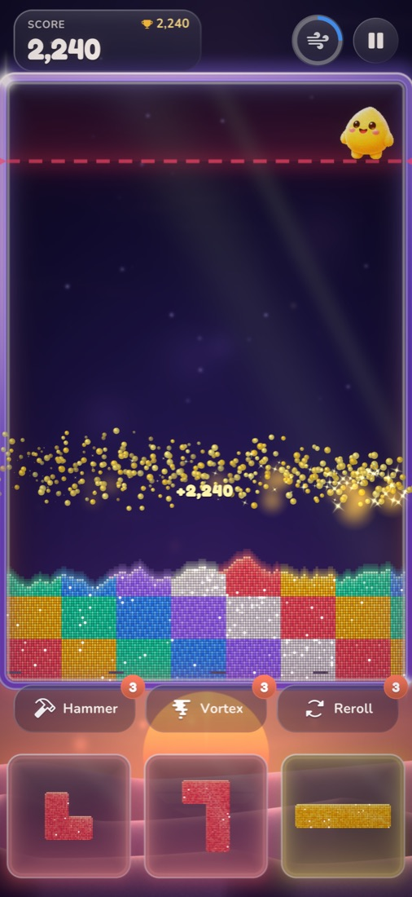
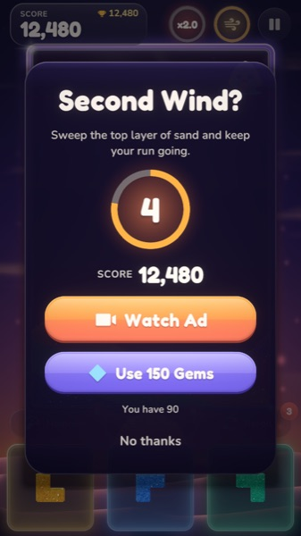
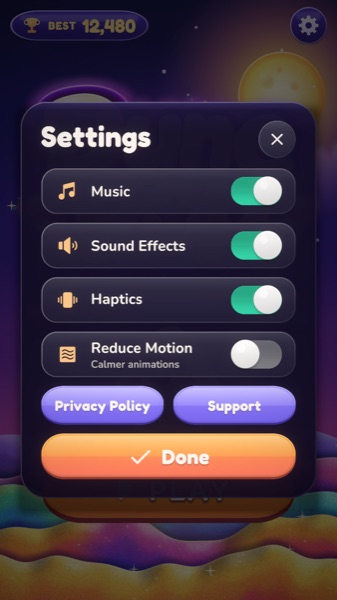

Contact us: dolotech.vn@gmail.com
We reply within 2 business days. Please tell us your device model, iOS version and what happened.
Frequently asked questions
How do I play?

Drag a glowing block from the tray into the dunes and let go: it crumbles into sand. Connect a single colour from the left wall to the right wall and that colour lights up and pops. Pop quickly one after another for combos. Keep the sand below the danger line, or the run ends.
What is Dune Shift?
Dune Shift tilts the whole desert so the sand slides and rearranges. It can help you finish a bridge or get unstuck.
What are the power-ups?
Hammer (Sand Hammer) blasts a small circle of sand where you tap. Vortex (Color Vortex) removes all the sand of one colour you pick. Reroll (Fresh Hand) gives you three new blocks.
The board is full. Can I keep going?

When a run is about to end you may see "Second Wind?". You can watch a short optional video, or spend gems, to sweep the top layer of sand and carry on. You can always choose "No thanks".
The video ad did not play.
Ads depend on your connection and on ad availability in your region, so a video is sometimes not ready. Wait a moment and try again, or check your internet connection. Reward videos are always optional. Occasionally a full-screen ad appears between rounds.
How do I change my ad or privacy choices?

Open Settings and choose Privacy Options (shown where the law requires it, for example in the EEA, the UK and some US states). On iOS you can also allow or deny tracking in Settings, Privacy & Security, Tracking.
Animations make me dizzy. What can I do?
Turn on Reduce Motion in Settings for calmer animations. You can also turn off Music, Sound Effects and Haptics there.
Can I restore my progress on a new phone?
There is no online account or cloud sync. Progress, settings and your best score are stored on your device and are part of your device backup, so they usually come with you if you restore an iCloud or computer backup or transfer from your old iPhone. They do not transfer if you set up the new phone without a backup.
How do I delete my data?
The game keeps its data on your device only; deleting the game removes it (a copy may stay in a device backup until that backup is deleted). Ad data handled by Google can be managed at adssettings.google.com and under Settings, Privacy Options.
Hỗ trợ
Liên hệ: dolotech.vn@gmail.com
Chúng tôi trả lời trong 2 ngày làm việc. Vui lòng cho biết đời máy, phiên bản iOS và sự cố bạn gặp.
Câu hỏi thường gặp
Chơi như thế nào?
Kéo khối phát sáng từ khay xuống đồi cát rồi thả: khối vỡ thành cát. Nối một màu từ bức tường trái sang bức tường phải, màu đó sẽ phát sáng rồi nổ tung. Nổ liên tiếp để có combo. Giữ cát dưới vạch nguy hiểm, nếu không ván chơi sẽ kết thúc.
Dune Shift là gì?
Dune Shift nghiêng cả sa mạc để cát trượt và sắp xếp lại, giúp bạn hoàn thành cây cầu màu hoặc thoát thế bí.
Các vật phẩm hỗ trợ là gì?
Hammer (Sand Hammer) làm nổ một vòng cát nhỏ nơi bạn chạm. Vortex (Color Vortex) xóa toàn bộ cát của một màu bạn chọn. Reroll (Fresh Hand) cho bạn ba khối mới.
Bàn chơi đầy rồi, có chơi tiếp được không?
Khi ván sắp kết thúc, bạn có thể thấy "Second Wind?". Bạn có thể xem một video ngắn (tùy chọn) hoặc dùng gem để quét lớp cát trên cùng và chơi tiếp. Bạn luôn có thể chọn "No thanks".
Video quảng cáo không phát.
Quảng cáo phụ thuộc vào kết nối mạng và việc có quảng cáo ở khu vực của bạn, nên đôi khi video chưa sẵn sàng. Hãy đợi một lát rồi thử lại, hoặc kiểm tra kết nối. Video thưởng luôn là tùy chọn. Thỉnh thoảng có quảng cáo toàn màn hình xuất hiện giữa các ván.
Đổi lựa chọn quảng cáo hoặc quyền riêng tư ở đâu?
Mở Cài đặt (Settings) và chọn Privacy Options (hiện ở nơi pháp luật yêu cầu, ví dụ EEA, Vương quốc Anh và một số bang của Hoa Kỳ). Trên iOS bạn cũng có thể cho phép hoặc từ chối theo dõi tại Cài đặt, Quyền riêng tư & Bảo mật, Theo dõi.
Hiệu ứng làm tôi chóng mặt.
Bật Reduce Motion trong Cài đặt để hiệu ứng nhẹ nhàng hơn. Bạn cũng có thể tắt nhạc, âm thanh và rung tại đó.
Có khôi phục tiến độ trên điện thoại mới được không?
Game không có tài khoản trực tuyến hay đồng bộ đám mây. Tiến độ, cài đặt và điểm cao nhất được lưu trên thiết bị và nằm trong bản sao lưu thiết bị, nên thường đi theo bạn khi khôi phục bản sao lưu iCloud/máy tính hoặc chuyển từ iPhone cũ. Chúng không chuyển nếu bạn thiết lập điện thoại mới mà không dùng bản sao lưu.
Xóa dữ liệu như thế nào?
Game chỉ lưu dữ liệu trên thiết bị của bạn; xóa game là xóa dữ liệu (có thể còn một bản trong bản sao lưu thiết bị cho đến khi bản sao lưu đó bị xóa). Dữ liệu quảng cáo do Google xử lý có thể quản lý tại adssettings.google.com và trong Settings, Privacy Options.